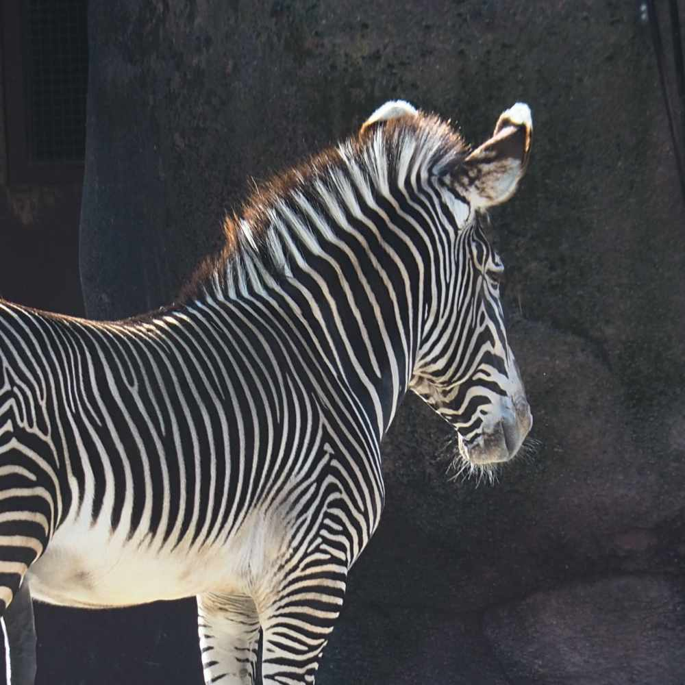
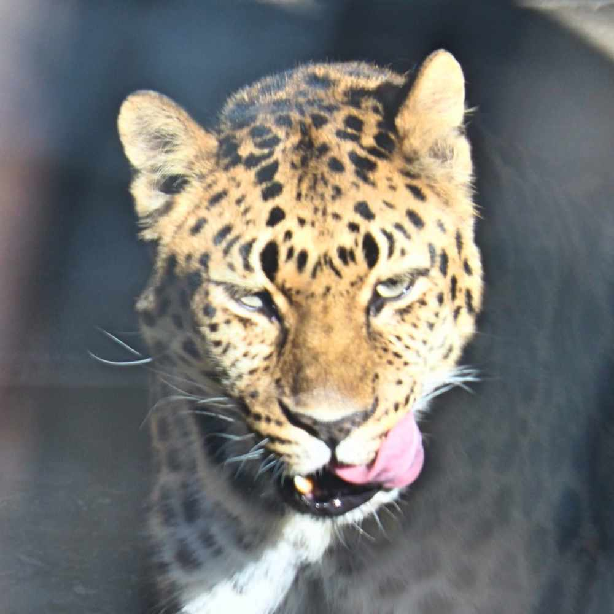
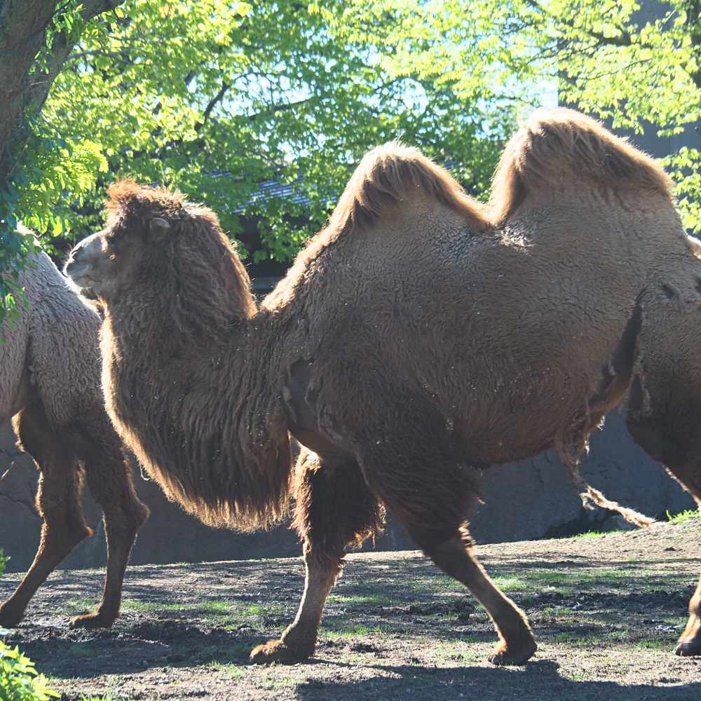
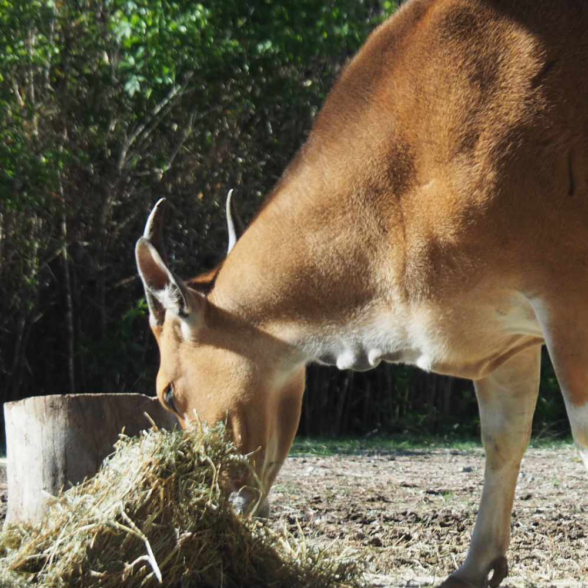
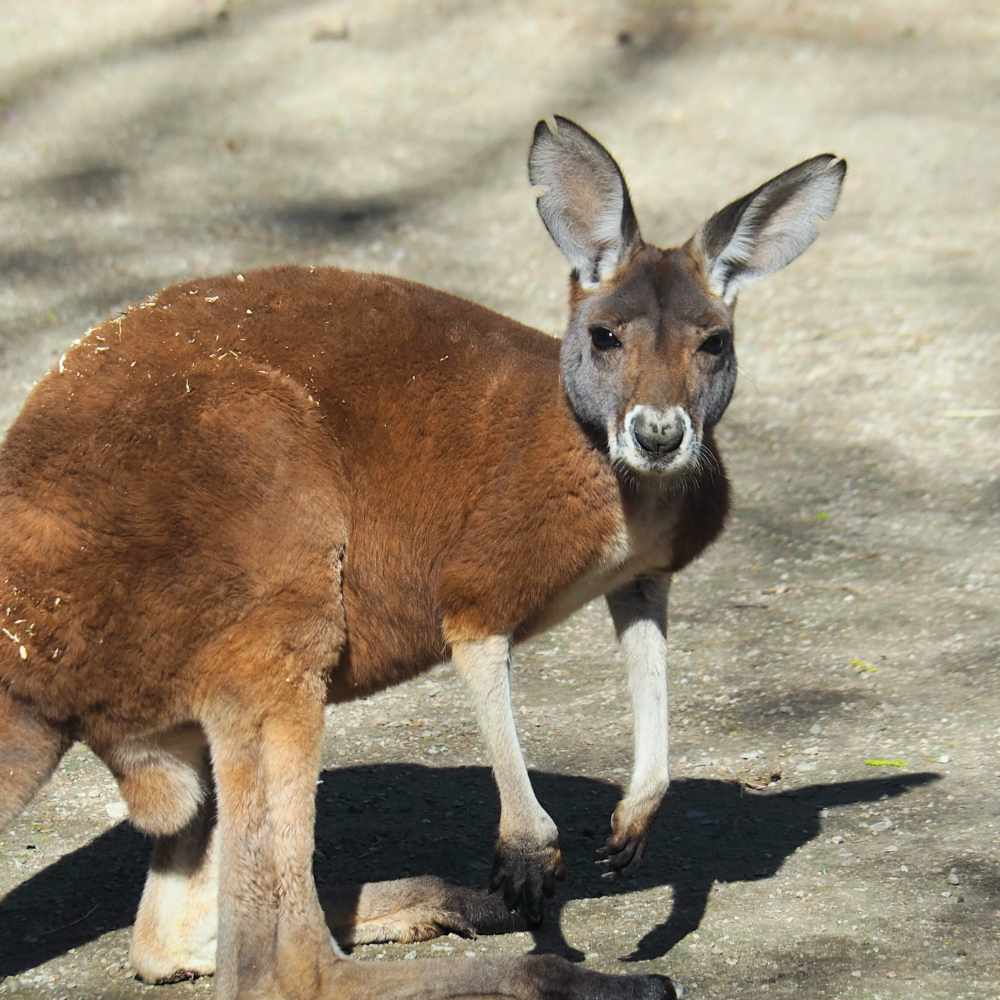
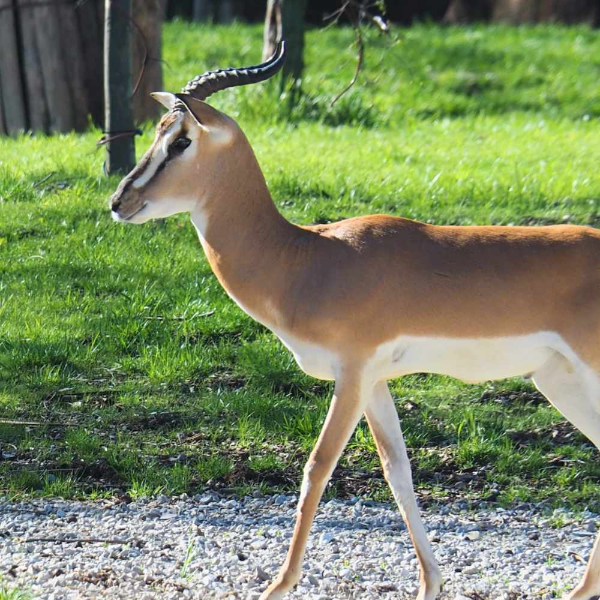
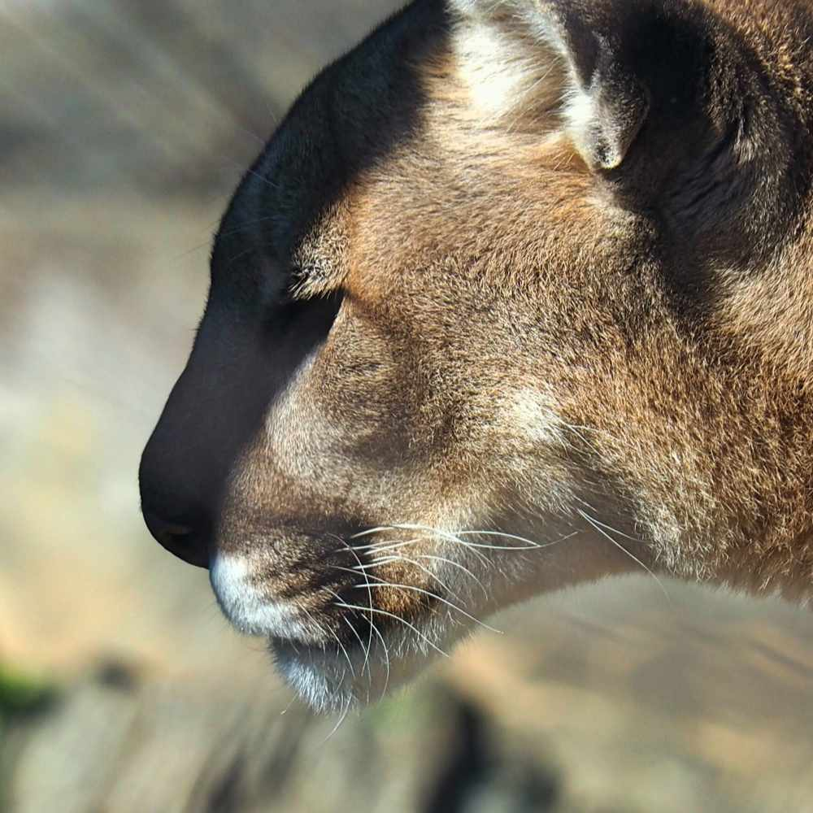
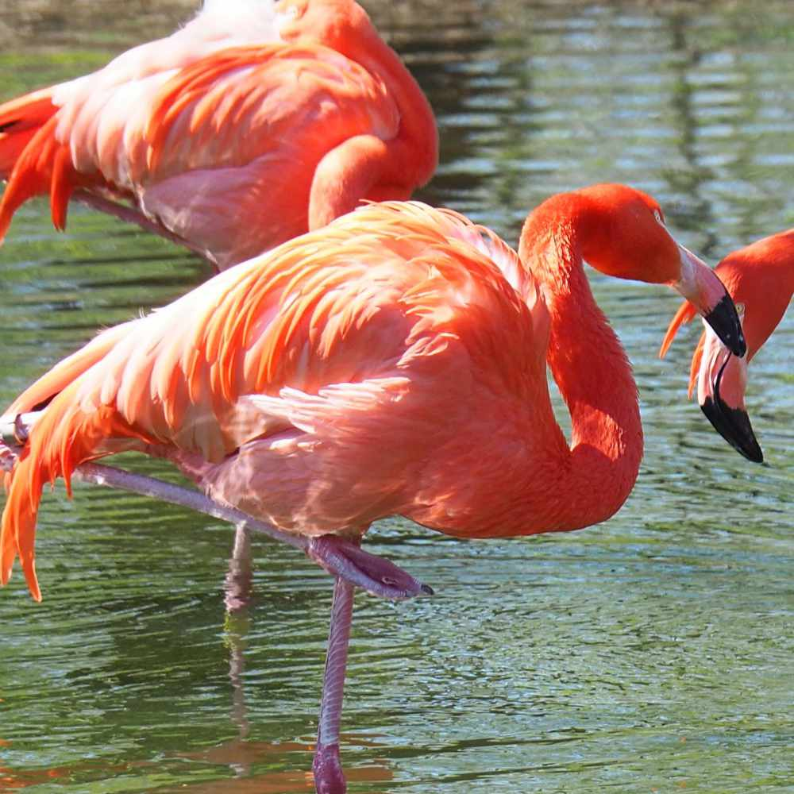
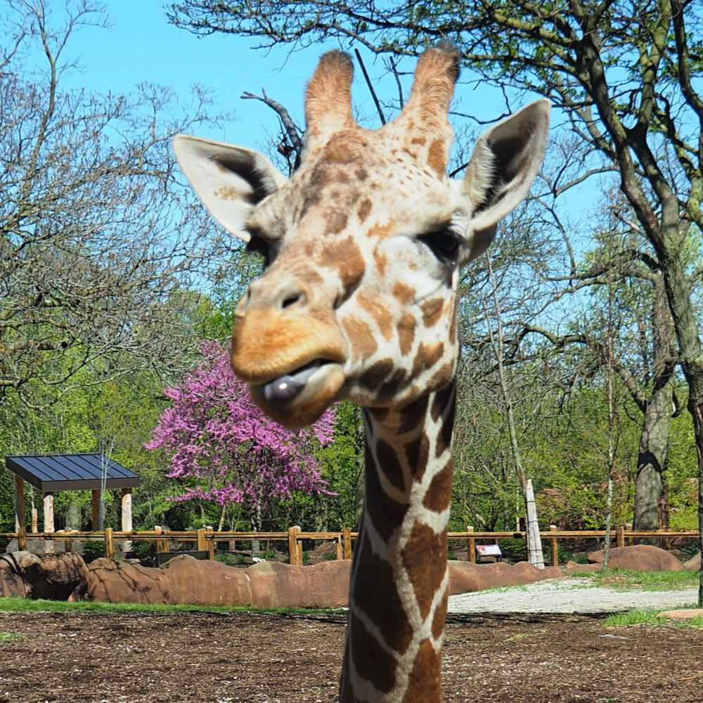
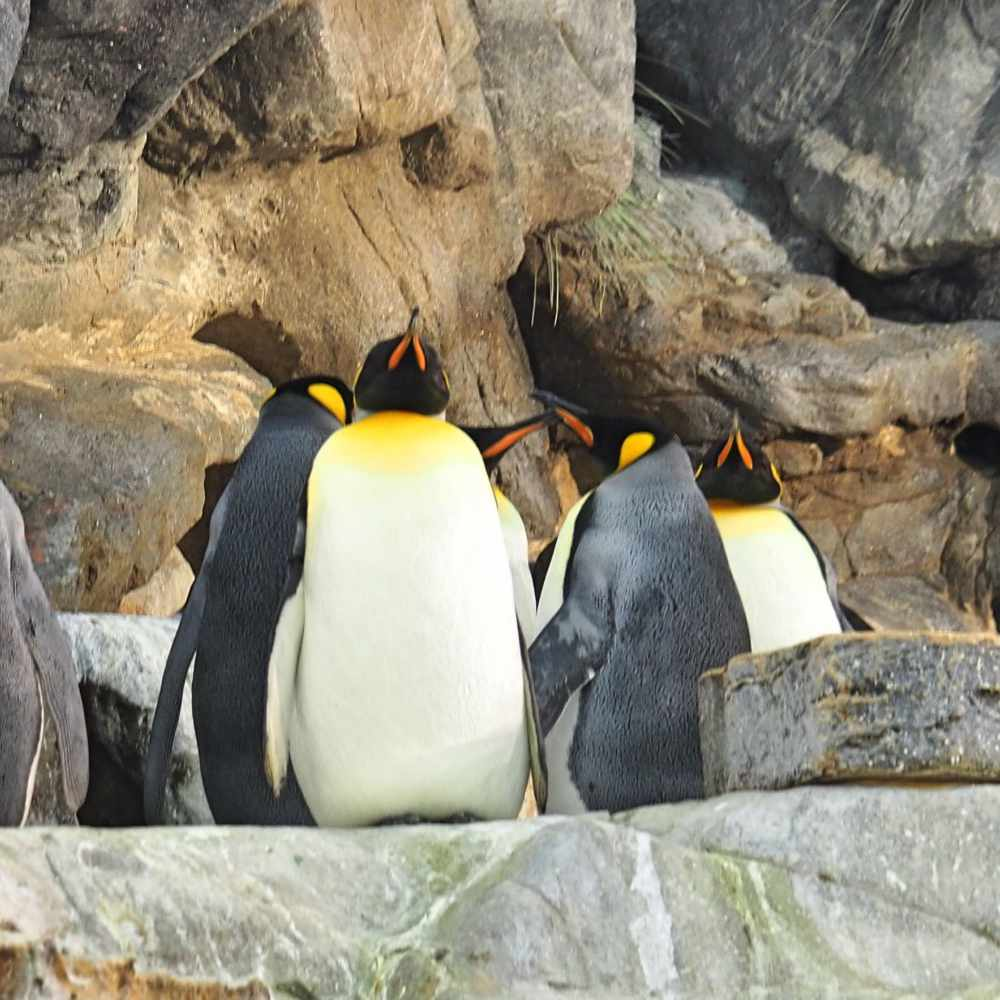

| Animal |
Name |
Description |
|  |
Zebra |
Zebras are African equines with distinctive black-and-white striped coats. There are three extant
species: the Grévy's zebra, plains zebra and mountain zebra. Their stripes come in different
patterns unique to each individual. |
|  |
Leopard |
The leopard is one of the five extant species in the genus Panthera, a member of the Felidae. It
occurs in a wide range in sub-Saharan Africa, in small parts of Western and Central Asia, on the
Indian subcontinent to Southeast and East Asia. |
|  |
Bactrian camel |
The Bactrian camel is a large, even-toed ungulate native to the steppes of Central Asia. It has two
humps on its back, in contrast to the single-humped dromedary camel. Its population of two million
exists mainly in the domesticated form. Their name comes from the ancient historical region of
Bactria. |
|  |
Common eland |
The common eland, also known as the southern eland or eland antelope, is a savannah and plains
antelope found in East and Southern Africa. It is a species of the family Bovidae and genus
Taurotragus. |
|  |
Red kangaroo |
The red kangaroo or red giant kangaroo is the largest of all kangaroos, the largest terrestrial
mammal native to Australia, and the largest extant marsupial. |
|  |
Thomson's gazelle |
Thomson's gazelle is one of the best-known gazelles. It is named after explorer Joseph Thomson and
is sometimes referred to as a "tommie". |
|  |
Cougar |
The cougar is a large felid of the subfamily Felinae. It is native to the Americas. Its range spans
from the Canadian Yukon to the southern Andes in South America, and is the widest of any large wild
terrestrial mammal in the Western Hemisphere. |
|  |
Greater flamingo |
The greater flamingo is the most widespread and largest species of the flamingo family. It is found
in Africa, on the Indian subcontinent, in the Middle East, and in southern Europe. |
|  |
Giraffe |
The giraffe is an African artiodactyl mammal, the tallest living terrestrial animal and the largest
ruminant. It is traditionally considered to be one species, Giraffa camelopardalis, with nine
subspecies. |
|  |
Emperor penguin |
The emperor penguin is the tallest and heaviest of all living penguin species and is endemic to
Antarctica. The male and female are similar in plumage and size, reaching 122 cm in length and
weighing from 22 to 45 kg. |